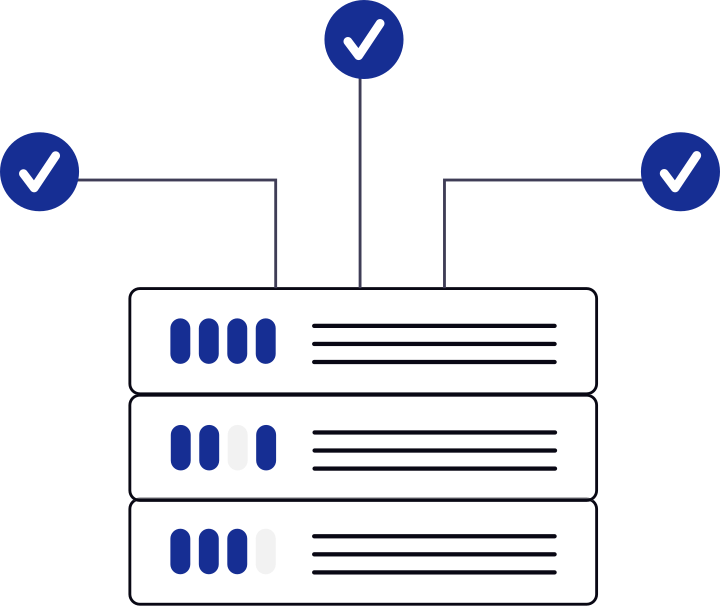

Arquiterctura y modelos de redes
La arquitectura y modelos de redes definen cómo se organiza la comunicación entre dispositivos, utilizando capas, protocolos y reglas que permiten el intercambio de información.
“vvvvvvvvvvvvvvvvvvvvvvvvvv.”
MODELOS DE RED
Son marcos conceptuales o estánadr que desccriben como viaja y se organiza la información. Estos modelos explican como se comunican los datos entre los dispositivos, utilizando capaz, protocolos y reglas. Las topologías de red define la estructura de conexión, mientras que el modelo de red define cómo funciona la comunicación sobre esa estructura.
JERARQUÍA DE PROTOCOLOS
Los protocolos son un conjunto de normas para formatos de mensajes y procedimientos que permiten a las maquinas y los programas de aplicación intercambiar información. La jeraquía de protocolos es una combianación de protocolos. Cada nievel de la jerarquía especifica un protocolo diferente para la gestión de una función de un sistema del proceso de comunicación. Cada nivel tiene su propio conjunto de reglas y los protocolos definen las reglas para para cada modelo de red.
DISEÑO DE CAPAS
PRIMITIVAS DE SERVICIOS
SERVICIOS Y PROTOCOLOS
MODELO OSI

MODELO TCP/IP
COMPARATIVIA DE MODELOS